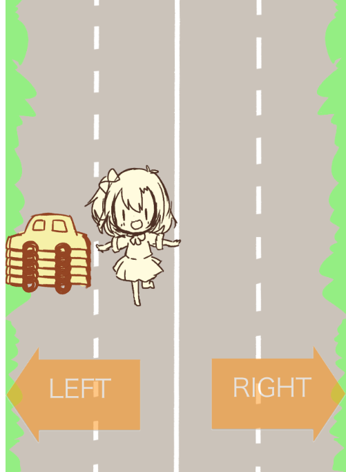

ほのかー！作成記 (1. ボタン画像をオブジェクト化する)
目次
- はじめに
- 連載バックナンバー
- 今日のゴール
- 勉強したこと(忘れたことも)
- 作ったもの
- 紆余曲折
- ソースコード
はじめに
前回のゲームではJavaScriptとCanvasの基本を勉強してきましたが、さすがにゲームは人様にプレイしてもらうものだし・・・・ということで、ゲームとして(中身も外見も)リッチなものを作る！というのが次のゲームのコンセプト。
外見のリッチは、画像と音声を再生させる機能で実現することで狙います。
中身のリッチは、スマホ対応、画面遷移、ゲーム性(難易度の調整)、ツイッター連携、を実現することで狙います。
学習のコンセプトとして、適宜にライブラリを利用することを設定しました。必要な機能は適宜、ライブラリを使って実現します。
本連載記事は上記のコンセプトにもがき苦しむ、徒然なるままの作業記録です。
連載バックナンバー
タグ：ほのCar！
各記事のまとめはタグまかせ
今日のゴール
今回のゲーム作成はむしろこれがやりたかったがため・・・・
ボタンの画像自身を(描画的な意味で)オブジェクト化する
- 前回のゲーム作成では行わなかった、スマホ操作に合わせたUIを作成します。
- 画像の表示にはimageオブジェクトが必要なのですが、Canvasの描画状は「１枚の絵」です。
- そのため、「画像をタッチ」というロジックが簡単に実装出来ません。
- 素のCanvasでは(基本的に)座標しか扱えないため、「画像(ボタン)をタッチ」を実現するには、1. 画像を表示して、2. 画像の表示範囲に合わせた座標範囲を別で決める。3. その範囲を操作可能なエリアにして、そこをタッチ！・・・と途方も無いロジックでタッチ操作をする羽目になります。
CreateJS
- 上の難題を解消するためには、画像を描画的にオブジェクトとして定義して、「画像をタッチ」を実現させます。
- そのためにライブラリを導入します。
- なんとなく見つけたCreateJSを使います。
新しく勉強したこと(忘れたことも)
- CreateJS
- PreLoadJS
- TweenJS
学習した点が多すぎるので、別記事にそれぞれのポイントを書きます。
作ったもの
ボタンが描画されている範囲でタッチ(クリックが有効になっています)

左右のボタン画像をたっちするとホノカチャンが動きます。やったー！
車が大変な出現しているところは次回以降に修正で・・・。
紆余曲折
多すぎる・・・・。学習内容にリンクしているので、そちらに譲ることにします。あ、画像とイベントを紐付けるためのCreateJSに行き着くまでが大変でした。
ソースコード
今回の実装の主旨からはそれますが、ゲームを構成するjsファイルをまとめておきます。この骨組みは今後も変わらない予定。
main.js
メイン・・・と言っても、ゲームの基本要素の初期化と最初の画面の関数を実行するクラス。
- ゲームの基本要素の初期化
- Canvasの2Dコンテキストの登録(CreateJSでは”ステージ”を作成する)
- ウィンドウサイズを読み取って、画像の拡大率を計算(使用する画像の大きさ調整用)
- スマホでのスライドスクロール禁止
- jQueryを使った
- これウェブゲームには大事
- タッチイベントの有効化
- PCではクリック。スマホではタッチ。が同義のイベントとして登録できるように
common.js
変数宣言、定数宣言、共通利用する関数を記述するjsファイル
変数宣言、定数宣言は特に真新しくないけれど、今回新しく作成したのが1
function initGameScreenScale(){
if(window.innerHeight/window.innerWidth < GAMESCREAN_HEIGHT/GAMESCREAN_WIDTH){
gameScreenScale = window.innerHeight/GAMESCREAN_HEIGHT;
}else{
gameScreenScale = window.innerWidth/GAMESCREAN_WIDTH;
}
gameScrean.height = GAMESCREAN_HEIGHT*gameScreenScale;
gameScrean.width = GAMESCREAN_WIDTH*gameScreenScale;
}1
###gameEngine.js
ゲーム処理を担うjsファイル。さすがに処理内容が多いので、独立させています。
###stateMachine.js
各画面(状態)を持つjsファイル。ここの関数から各画面の処理が開始し、他の画面(状態)へ遷移します。
とりあえず作成したが下の6つ。これで公開するゲームの画面数としては十分でしょう。
//ロード画面—————————————————————
function loadState(){
}
//TOP画面—————————————————————
function topState(){
}
//操作説明画面—————————————————————
function howToPlayState(){
}
//クレジット画面—————————————————————
function creditState(){
}
//ゲーム画面—————————————————————
function gameState(){
}
//GAMEOVER画面—————————————————————
function gameOverState(){
}
```
content.js
使用する素材をロードするjsファイル。主にPreLoadJSのロード機能が集中しています。
character.js
登場人物をまとめるjsファイル
現在の登場人物はプレイキャラクターと敵キャラクター
- プレイヤ
- honoka
- 敵
- car